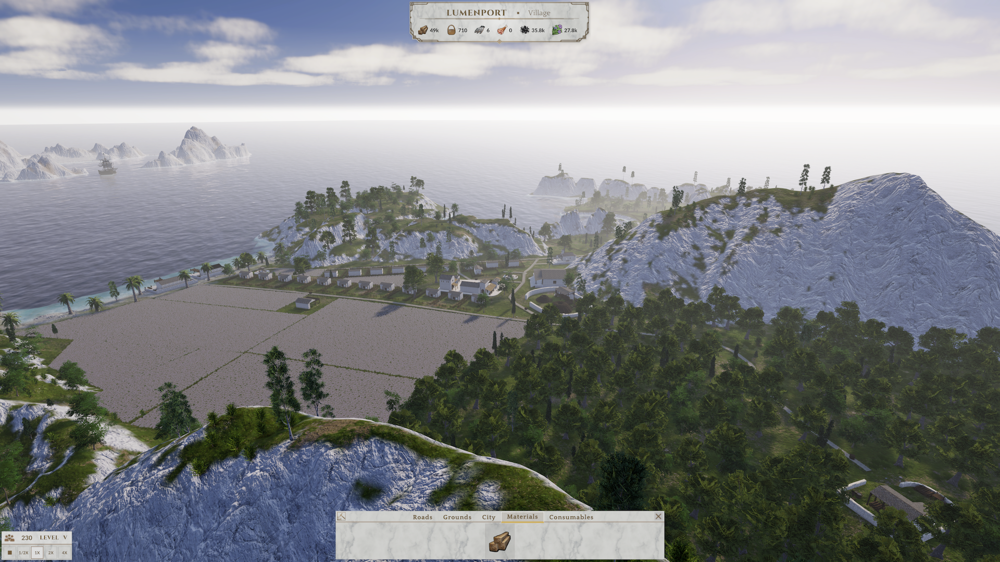

It finally feels like a game.

Big milestone
I skipped last month's report because it made more sense to wait until this phase was actually complete. The screenshot above was captured directly from the playable build, not from July's visual prototype. Looking back at the blockouts, I remember how they never quite felt like a game. This finally does.

July
First of all, thank you to Elvin for contributing these draft models to the game. They gave the project some much-needed early momentum!
For July, I hired András, an environment artist, to fill in my skill gaps and help me make something decent, fast. We started an empty Unity project and tried throwing the right things in there as fast as possible, always just going until "not bad" with each piece of the composition. I was proactively removing the technical hurdles and finding the tools for prototyping and figuring out how each new piece would work. He was using his 3D asset creation and art skills to fit whatever we found together, or create the missing parts and compose them together tastefully. The work was intense, we pushed to our limits every day, wasting no time. Finally, he made a first iteration of the UI with hand-drawn icons.
That month taught me a lot about what I can learn myself and what I need to outsource. I learned what it's like to work with an artist on a game, what they need from me, and what I should expect. As a software engineer, I'm used to progress feeling linear. Visual work didn't feel like that. Individual pieces often looked meh until the whole thing came together, so we had to keep moving at "not bad" instead of polishing each element individually. The tight schedule also pushed us to be extremely efficient. What we achieved broke a mental barrier for me and kicked development into second gear.
Thank you so much, András!
August
Returning to the actual game project after a month in the visual prototype made me take one big, deep breath... but then I dove in. Integrating the prototype wasn't just importing assets. The real terrain and buildings came with gameplay problems the blockout didn't have. I had to deal with placement validation, terrain constraints, vegetation clearing, agricultural ground areas, UI work, entirely new systems, and heavy modifications to existing ones. By the end of August - right on time - the integration was done!
At that moment, I finally felt like I had a game! I was so happy! Then I thought to myself, it took me about a year to get here... How? Well, I can explain, but I won't do that here, maybe one day. Long story short, there are a lot of decisions to make before jumping in. In the beginning, you make big decisions with very little context. As the project takes shape, the context gets richer and the decisions become smaller and somewhat easier. But those early decisions are hard to change.
Now
I feel like those early systems and architecture decisions are starting to pay off, and my progress is speeding up. The design and thinking work I did up front is now enabling me to "just do". It's a fantastic feeling and it keeps me motivated! We're 11 days into September. I find myself just enjoying building up the same island again and again. (It relaxes me, haha.)
At the same time, I have some amazing music and sound work coming in. Obviously I had to bring in help for that - I am no composer. I can't wait to integrate it!
Current outlook
The core of the vertical slice hasn't changed in months. I added one important piece now that I can feel how the game plays, and then I locked it in. What I already have is working quite well. I watched 2 playtests live. The flow was understandable at once, and it also showed the most obvious gaps that I jumped on filling.
Exciting times are ahead, with important game design and UX decisions to make. The next set of buildings creates the game's first progression unlock. From there, the player must expand onto new islands and connect the settlements through trade routes. That's when the empire begins!
This is the point where I want to start publishing more. The design decisions are getting really interesting, and I want to document them as they happen.
Thank you for reading and following the journey. It means the world. It was fun looking back at these months, and now I'm hyped to put my head down again and keep building.
Subscribe to get an email when the next one drops.
Comments